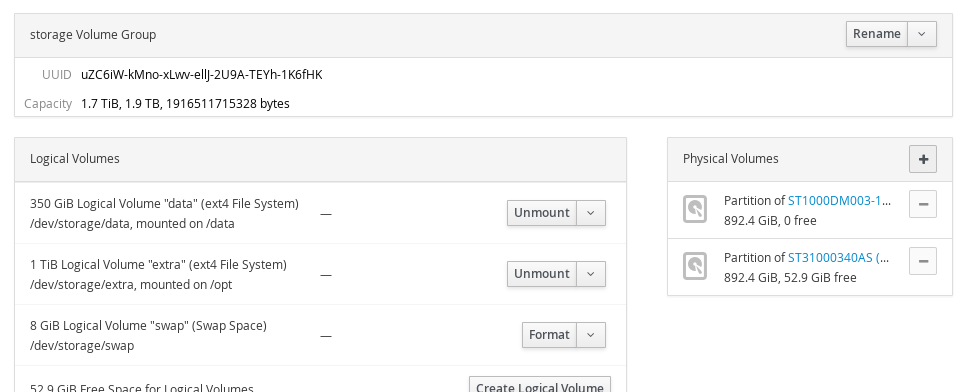

Cockpit is the modern Linux admin interface. We release regularly. Here are the release notes from versions 119 and 120.
You’ll notice that we’ve dropped the 0.x from the beginning of the
version numbers. This underscores the fact that Cockpit is stable. We’ve been
regularly releasing functionally stable releases for most of the last year.
Expandable and Filterable Containers and Images
Lars reworked the Containers section of Cockpit. The various images and containers are not expandable inline, and it’s also easy to find a specific image and container by using the filter bar to search for it.
Take a look:
VM Configuration and Monitoring
Marek worked on a new interface in Cockpit for configuring and monitoring
virtual machines running on the current system. This has the ability to
grow into something like the desktop virt-manager tool.
It looks something like this:

Unmanaged Network Devices
Cockpit now shows unmanaged network devices in its listing. You can’t configure them or do much with them, but their presence is acknowledged. This should make troubleshooting non-standard configurations easier.
Sidebar for Physical Volumes in a Volume Group
Marius added a sidebar that shows up on LVM groups or volumes, that shows which physical devices are involved.
Here’s an example:

SSH connections are run in a separate process
When Cockpit connects to an additional server it uses SSH, much like
Ansible or other tools. We now launch a separate cockpit-ssh process
for each outgoing connection to another server.
This lets us isolate the involved code much better, providing security benefits. But it also makes it possible to insert additional logic when embedding Cockpit. It’s possible to put in shims to lookup keys, single-sign-on tokens or keytabs, and so on.

Only connect to remote machines already known to Cockpit
When connecting to additional machines via SSH, Cockpit now refuses to connect to machines it doesn’t have a host key for. This tightens up security and prevents certain reflection attacks.
Fix bugs preventing Logs page from working in Firefox 49
The Logs section of Cockpit failed to function on Firefox 49. This version includes a fix for that.
Add tooltip describing group name in Roles list
When configuring local user accounts, one can assign various roles such as ‘Server Administrator’ to the account. Cockpit now displays the Unix user group that is involved in the role.

From the future
Marius added support for NetworkManager checkpoints. This means that while configuring network interfaces, if a change would cause Cockpit to disconnect, then Cockpit can revert the change and retain connectivity to the system.
This is similar to how a Linux Desktop asks you to click in a dialog if you accept the new screen configuration. Except in the networking case we can test the connectivity automatically.
Try it out
Cockpit 120 is available now: